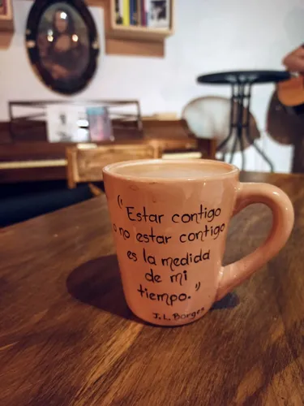

Hay palabras que no curan la herida: se sientan a nuestro lado hasta que amanece.
León, Guanajuato · Café y cultura
Café, libros
y un verso
más.
Un refugio entre libros, café recién hecho y conversaciones sin prisa. Encuentra tu próxima pausa en la casa.
“Aquí los días se toman despacio y las ideas, bien cargadas.”
De nuestra carta
Explorar menú y precios →Tu pausa tiene buen gusto.
Imágenes ilustrativas · Precios en MXN. Consulta presentación y disponibilidad en barra.

Nuestra pequeña revoluciónUn refugio para
Un refugio para
las almas despiertas.
Creemos que un buen café puede abrir la puerta a una gran conversación. Y que la poesía, como la cafeína, siempre encuentra la manera de mantenernos vivos.
Somos una cafetería para lectores, curiosos y amantes de la sobremesa. Ven por el espresso, quédate por la compañía y deja que el día encuentre su propio ritmo.
Ven a conocernosEncuentros en la cafetería
Próximos eventos
Lecturas, talleres y noches para compartir. Descubre qué sigue en la casa.
Preparando la agenda…
Lecturas para acompañar tu taza
Voces que nos inspiran
Pequeños homenajes originales a grandes autores. Estos textos no son citas ni fragmentos de sus obras.
1–3 de 13
“La vida es eso que pasa entre el primer sorbo y el último verso.”Una verdad de esta casa
La mesa está puestaNos vemos
Nos vemos
entre tazas.
Ven a leer un rato, platicar sin prisa o simplemente disfrutar el aroma del café recién hecho.
DirecciónBlvd. Vasco de Quiroga 318, colonia Las Fuentes, León, Guanajuato.
HorarioConsulta el horario del día en nuestras redes.
ContactoEscríbenos en Instagram ↗
Nos encontramos en los eventos
Organiza una lectura, taller o encuentro cultural; o inscríbete para participar en los próximos eventos del café.
Conocer la agenda cultural¿Tienes una lectura o un taller en mente? Escríbenos para platicarlo.
Blvd. Vasco de Quiroga 318, colonia Las Fuentes, León, Guanajuato. Abrir indicaciones en Google Maps ↗